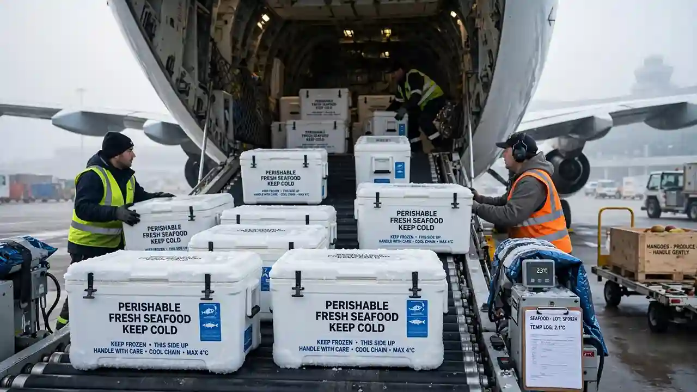

By the Skylinks Asia Charter Desk · Reviewed by our Operations Team · October 2026
TL;DR: Perishable cargo — fresh produce, seafood, and cut flowers — is governed by IATA’s Perishable Cargo Regulations (PCR), a completely separate rulebook from dangerous goods regulations (DGR), covering packaging, labelling, and time-and-temperature handling rather than hazard classification. Perishables account for roughly 15% of global air cargo by some industry estimates, and the category is genuinely time-critical: a shipment’s commercial value can collapse within hours of a missed connection. Pakistan’s own 2026 mango export season illustrates the stakes well — exporters leaned hard on scheduled belly cargo on Middle Eastern passenger airlines, and reduced, unreliable flight schedules directly constrained how much fruit could move before it lost freshness, a gap dedicated charter is built to close.
Perishable cargo under IATA rules means fresh and frozen food — meat, seafood, dairy, and produce — plus cut flowers, live plants, and similar time-and-temperature-sensitive goods. Pharmaceuticals are perishable in the everyday sense but are governed by IATA’s separate Temperature Control Regulations (TCR) rather than PCR, which is why pharma cold-chain logistics is treated as a distinct discipline.
The governing rules sit inside IATA’s Perishable Cargo Regulations manual. It defines:
Recent PCR editions have also expanded dry ice guidance for seafood cold-chain — worth flagging because dry ice itself is Class 9 dangerous goods regardless of what it is cooling, and that classification is covered in detail in our DGR guide for Pakistan.
They are entirely separate IATA frameworks, and the confusion between them is common. PCR governs packaging, labelling, and time-and-temperature handling for food and flowers. DGR governs classification, packaging, and documentation for substances that are hazardous in themselves.
A shipment can be perishable without being dangerous goods — most fruit, flower, and seafood cargo falls into exactly that category. The rules only overlap where a specific product happens to fall under both. Dry ice used as a coolant is the clearest example: the perishable item itself is not DG, but the coolant is Class 9 and requires DG documentation alongside the PCR paperwork.
| Regulation | Covers | Typical Examples |
|---|---|---|
| PCR — Perishable Cargo | Time-and-temperature-sensitive food and flowers | Fresh mangoes, frozen shrimp, cut roses |
| TCR — Temperature Control | Pharmaceutical and healthcare cold chain | Vaccines, biologics, clinical trial materials |
| LAR — Live Animals | Live animals, including live seafood | Live crab, live tropical fish, breeding stock |
| DGR — Dangerous Goods | Substances hazardous in themselves | Lithium batteries, dry ice, flammable liquids |
IATA CEIV Fresh is the perishables-sector equivalent of the CEIV Pharma certification used in cold-chain pharma. It demonstrates a handler or carrier’s compliance with PCR best practice for food safety and cold-chain integrity, and functions as a useful quality filter when shippers are comparing handlers or operators.
By one industry estimate, fruit, fish and seafood, and cut flowers together account for roughly 40% of all PCR-related cargo claims — a reminder that this category carries real financial risk from poor handling, not just spoilage risk.
Perishable air cargo moves on a narrow timeline. Quality degrades continuously after harvest, catch, or cutting, and commercial value degrades with it. Unlike general freight, which can wait a day without much consequence, a missed connection on a fresh-seafood or cut-flower shipment can turn a profitable load into a write-off.
Pakistan’s flagship export variety, Sindhri — grown predominantly in Sindh with increasing volume from Punjab — exports June through September. The 2026 season told a stark story: exports fell to roughly 44,882 metric tons, down sharply from 132,587 tons in 2024 and 116,011 tons in 2025 — a roughly two-thirds decline in two years.
The decline was driven by a mix of climate pressure, a closed Afghan land border since October 2025, and Gulf-region tensions disrupting the markets that normally absorb a large share of Pakistan’s crop. Air freight rates roughly doubled this season, from around 70–90 cents per kilogram to close to $1.60–2 per kilogram. Crucially, exporters shipping to the UK, Europe, and Singapore rely heavily on scheduled belly cargo space on Middle Eastern passenger airlines — and reduced, unreliable flight schedules directly limited how much fruit growers could actually get to market while it was still sellable.
That is precisely the scenario where dedicated charter earns its cost: when scheduled capacity cannot absorb a harvest-season volume spike on the timeline the product demands. Cost structure for this kind of move is covered in more depth in how much charter costs.
Exports reached a record $568 million in fiscal year 2025-26, up 38% over two years, led by frozen fish, squid, shrimp, and crab, even amid regional trade disruption linked to Gulf tensions. One concrete signal of the air-cargo side of that growth: Pakistan’s first regular international cargo route to Kashgar in western China launched with roughly 9.25 tonnes of seafood on its inaugural weekly flight — fish and shrimp moving fresh, on a schedule the product’s shelf life actually demands.
Kenya alone exports well over 120,000 tonnes of cut flowers by air every year — a volume that simply is not viable by any other transport mode given how fast quality degrades after cutting. It is the clearest example of a category that exists in its current shape only because of air freight.
A few recurring situations push perishable shippers toward charter rather than booking scheduled belly cargo. Charter is coordinated under our cargo and freight charter desk and typically uses widebody freighters such as the Airbus A330-200F where volume and temperature control both matter.
Demand spikes sharply and briefly. Pakistan’s June–September mango season or a flower crop’s peak cutting window will exceed what scheduled flights on the relevant routes can absorb. This is one of the more predictable, bookable-in-advance charter demand patterns in the perishable category — unlike the less predictable AOG or emergency-cargo scenarios covered elsewhere on this site.
The practical implication for exporters and forwarders planning around a seasonal spike: contract charter capacity well before the season starts, not during it. Aircraft availability tightens as the window approaches, and rates tighten with it.
It depends on temperature and handling compatibility. Perishables generally need a stable temperature-controlled hold, so co-loading with cargo that has conflicting temperature or handling requirements is not usually practical. Compatible perishable categories — for example, different fruit shipments bound for the same destination — can often share a charter, which improves economics for everyone involved.
Where the DGR classification of the cooling agent is involved, the same shipment may carry both PCR and DGR documentation. That overlap is routine, not unusual — the two sets of rules simply describe different aspects of the same consignment.
How temperature-controlled pharmaceutical air freight differs from perishable food and flower logistics.
How heavy-lift and outsize project cargo moves by air, and which aircraft can take it.
A practical breakdown of private jet and cargo charter costs by aircraft type, and what drives the final quote.
Send us the commodity, routing, and shelf-life deadline. Our charter desk will confirm aircraft options, temperature control, and timing before you commit.